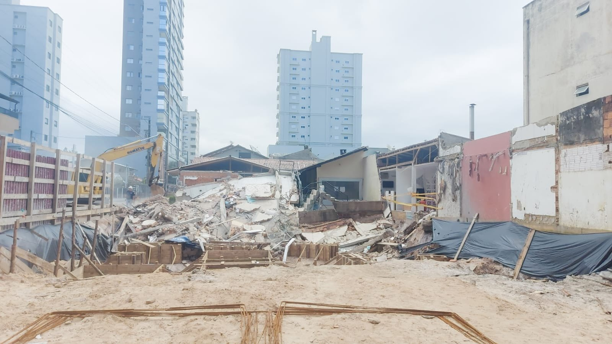

Três dias depois do voto, a terraplanagem virou lei em Itapema, e o texto lista sete casos que ficam livres de pedir autorização
A matéria em que lemos a Lei 5125 pela primeira vez, no dia da sanção.
A Defesa Civil de Itapema atendeu nesta sexta-feira uma residência atingida por desabamento na Rua 290, na Meia Praia. A lateral da casa, a garagem e uma edícula foram afetadas, outra edícula nos fundos teve parte da parede rompida e as duas edificações ficaram interditadas. Não houve feridos. A casa fica ao lado de um terreno onde um edifício está em construção, e a Prefeitura informa que as causas ainda estão sendo apuradas. Baixamos e lemos a Lei 5125, sancionada em 25 de setembro, que criou a Autorização de Terraplanagem em Itapema: o artigo 5º dispensa dessa autorização a escavação para fundação e subsolo quando a obra tem alvará de construção válido.
Em 30 segundos · Modo de Leitura, formato original Santa Informa
Uma casa foi atingida por desabamento em Itapema.
Foi nesta sexta-feira, 16 de outubro.
O endereço é a Rua 290, na Meia Praia.
A Defesa Civil esteve no local avaliando.
A lateral da casa foi atingida.
A garagem e uma edícula também.
Outra edícula nos fundos teve parede rompida.
Não houve feridos.
Duas edificações ficaram interditadas.
A interdição é para garantir segurança.
As equipes avaliam destroços e estruturas.
A casa fica ao lado de um terreno em obra.
Nesse terreno sobe um edifício.
A Prefeitura diz que as causas estão em apuração.
Nenhum órgão apontou responsável até agora.
Itapema tem lei nova sobre mexer com terra.
É a Lei 5125, de 25 de setembro de 2026.
Ela vale há 21 dias, conta nossa.
A lei criou a Autorização de Terraplanagem.
Quem emite é a FAACI.
O prazo de análise é de até 60 dias.
A autorização vale 36 meses.
O artigo 4º exige laudo geológico-geotécnico.
Vale para talude acima de 4 metros.
Vale também em área de risco mapeada.
E quando a vistoria vê sinal de instabilidade.
Mas o artigo 5º lista 7 dispensas.
O inciso IV é o que pesa aqui.
Ele dispensa escavação de fundação e subsolo.
Também piscina e infraestrutura de edificação.
A condição é ter alvará de construção válido.
O laudo está no capítulo do pedido.
Quem é dispensado do pedido não passa por ele.
A lei não deixa o responsável livre de tudo.
O artigo 6º mantém a responsabilidade civil.
Inclui dano a terceiro e à estabilidade do solo.
E mantém a fiscalização da FAACI.
A nota da Prefeitura não cita a lei.
Nem diz se a obra vizinha tem alvará.
Não procuramos Prefeitura, Defesa Civil nem FAACI.
InfraestruturaPublicada em Redação Santa Informa

A Defesa Civil de Itapema passou esta sexta-feira na Rua 290, na Meia Praia, avaliando uma residência atingida por um desabamento. O estrago, segundo a Prefeitura, pegou a lateral da casa, a garagem e uma edícula. Uma segunda edícula, nos fundos do terreno, teve parte da parede rompida. As duas edificações ficaram interditadas e ninguém se feriu. A casa fica ao lado de um terreno onde está em andamento a construção de um edifício, e a Prefeitura diz que as causas ainda estão sendo apuradas.
"Nossa equipe está acompanhando a ocorrência e realizando a avaliação técnica no local. Neste momento, o mais importante é verificar as condições da estrutura e evitar qualquer novo risco", disse o diretor da Defesa Civil, Cabo Motta, na nota publicada pela Prefeitura. O órgão informa que segue no caso e vai orientar sobre as medidas necessárias depois da avaliação técnica.
O desabamento acontece 21 dias depois de Itapema passar a ter regra escrita para obra que mexe com terra. A Lei 5125, sancionada em 25 de setembro de 2026, criou a Autorização de Terraplanagem, emitida pela FAACI, com prazo de análise de até 60 dias e validade de 36 meses. Baixamos o texto no Diário Oficial dos Municípios e lemos os 9 artigos. O artigo 4º torna obrigatório o Laudo Geológico-Geotécnico em três situações: talude de corte ou aterro acima de 4 metros, local mapeado como área de risco de movimento de massa, e terreno onde a vistoria encontre sinal de instabilidade, como trinca no solo ou cicatriz de abatimento.
O artigo 5º lista sete atividades dispensadas da autorização. O inciso IV é o que toca uma obra como a do terreno vizinho: ficam dispensadas as "escavações estritamente necessárias à implantação de fundações, subsolos, piscinas e infraestrutura de edificações", desde que o projeto tenha aprovação válida e alvará de construção. Como o laudo geológico do artigo 4º mora no capítulo que trata do pedido de autorização, quem está dispensado do pedido não passa por essa exigência. A lei não larga a mão de quem constrói: o artigo 6º diz que a dispensa não isenta o responsável da responsabilidade civil e administrativa por dano a terceiro ou à estabilidade geológica do local, nem da fiscalização da FAACI, que pode aplicar sanção.
Nada disso aponta irregularidade na obra ao lado, e é importante dizer com todas as letras: a Prefeitura não apontou causa nem responsável, e a avaliação técnica estava em andamento quando fechamos esta matéria. O que está posto é o desenho da regra em vigor na cidade. Em Itapema, onde prédio novo sobe colado em casa antiga, a escavação de fundação é justamente a hipótese que o legislador tirou da fila da FAACI.
O resumo de 30 segundos está no topo e a versão completa é o texto acima. Aqui ficam as três leituras da casa sobre o mesmo assunto.
Clara, a otimista
A primeira notícia boa é a mais importante: ninguém se machucou. A segunda é que a Defesa Civil chegou no mesmo dia, avaliou e interditou as duas edificações antes de qualquer coisa piorar. Interdição assusta quem vê de fora, mas é o contrário de descuido, é o órgão tirando gente de perto do risco enquanto a estrutura não é entendida.
E vale notar que hoje existe um texto público para consultar. Até setembro, quem quisesse saber o que a cidade exige de uma obra que mexe com terra dependia de perguntar no balcão. A Lei 5125 está no Diário Oficial, com artigo, inciso e prazo, e qualquer vizinho consegue ler. Regra escrita é o começo de toda cobrança possível.
Seu Prudêncio, o criterioso
Merece atenção o desenho da lei, e falo da lei, não desta obra, cuja causa ninguém apurou ainda. O artigo 4º é bem pensado: exige laudo geológico-geotécnico quando o talude passa de 4 metros, quando o terreno está em área de risco mapeada e quando a vistoria encontra trinca no solo. São os três sinais que um técnico procuraria. O ponto que vale acompanhar é que esse laudo vive dentro do capítulo do pedido de autorização, e o artigo 5º, inciso IV, tira do pedido a escavação de fundação e de subsolo com alvará. Numa cidade onde o prédio sobe rente ao muro do vizinho, essa é a escavação mais comum que existe.
Também merece atenção a instrução normativa prometida no parágrafo 1º do artigo 2º. Ela é quem define a documentação do pedido, e não achamos a publicação dela. Lei que depende de norma para funcionar fica parada esperando.
Dito isso, é justo reconhecer que o texto fez a parte mais difícil. O artigo 6º fecha a porta que costuma ficar aberta nessas leis: dispensa de autorização não é dispensa de responsabilidade civil por dano ao vizinho, nem de fiscalização, nem de alvará. Uma sugestão útil: quando a FAACI publicar a instrução normativa, incluir ali o aviso ao confrontante nas escavações rente à divisa. É linha de papel barata e evita discussão cara depois.
Caco, o sarcástico
Itapema cresce para cima com uma disciplina admirável. O prédio sobe, a casa do lado fica cada vez mais na sombra, e agora a gente descobriu que ela também fica cada vez mais perto do buraco. Progresso é isso: todo mundo ganha vista, menos quem já estava ali.
Reclamação registrada: a lei nova tem 9 artigos e eu li os 9. O que trata de laudo geológico é o quarto. O que dispensa escavação de fundação é o quinto. Perdi para o inciso IV por uma página de diferença, que é a distância média entre uma boa ideia e o parágrafo seguinte.
Mas tá bom porque ninguém se feriu, a Defesa Civil apareceu no mesmo dia e a lei pelo menos existe e está no Diário Oficial para quem quiser ler. Antes um texto com inciso discutível do que nenhum texto. Agora é a FAACI publicar a tal instrução normativa, e aí a gente volta a reclamar com mais propriedade.
Fontes: o atendimento na Rua 290, na Meia Praia, a lateral da casa, a garagem e as duas edículas atingidas, a interdição das duas edificações, a ausência de feridos, o terreno vizinho com edifício em construção, a informação de que as causas ainda estão sendo apuradas e a fala do diretor da Defesa Civil, Cabo Motta, estão na nota Defesa Civil acompanha ocorrência de desabamento na Meia Praia, publicada pela Prefeitura de Itapema em 16 de outubro de 2026 e lida por nós no mesmo dia. A Autorização de Terraplanagem, o prazo de até 60 dias, a validade de 36 meses, o Laudo Geológico-Geotécnico do artigo 4º com o talude de 4 metros, as sete dispensas do artigo 5º, o inciso IV sobre escavação de fundação e subsolo com alvará de construção, o limite de 5.000 m² de aterro com até 1 metro em relação ao imóvel vizinho, a responsabilidade civil mantida pelo artigo 6º e a instrução normativa prevista no parágrafo 1º do artigo 2º estão no texto da Lei nº 5125, de 25 de setembro de 2026, publicada no Diário Oficial dos Municípios de Santa Catarina, que baixamos e lemos na íntegra em 16 de outubro de 2026. A contagem de 21 dias entre a sanção e a ocorrência é nossa. Cobrimos a aprovação dessa lei em Três dias depois do voto, a terraplanagem virou lei em Itapema, nossa matéria de 26 de setembro de 2026.
A matéria em que lemos a Lei 5125 pela primeira vez, no dia da sanção.
 Itapema · Infraestrutura
Itapema · InfraestruturaA outra obra que a Meia Praia espera, e que ainda não saiu do papel.
 Itapema · Infraestrutura
Itapema · InfraestruturaOutro bairro de Itapema aprendendo a conviver com obra.